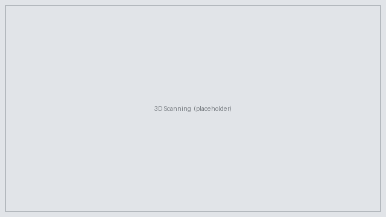
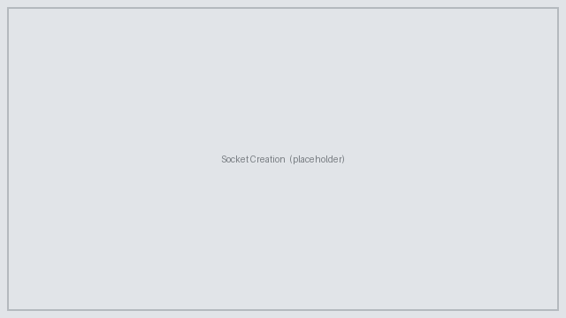

Give a Paw
No-cost, custom 3D-printed prosthetics for shelter animals in the Bay Area.
Meet our 2026 patientsOur 2026 Animal Patients
Five animals, five custom builds. Select any patient to read their full case study.

About the Program
Give a Paw is a UC Berkeley program committed to designing and manufacturing no-cost prosthetics for animals in the Bay Area. In the personalized healthcare field, there are not enough trained professionals to deliver personalized care to all the patients in need.
"Only 1 in 10 people in need has access to assistive products, including prostheses and orthoses, because of their high cost and because of lack of awareness, availability, and trained personnel."
The Give a Paw Program is committed to addressing these obstacles of high cost, lack of awareness, and most importantly, trained personnel. At the University of California, Berkeley, Bioprinting@Berkeley runs a 2-unit Canine Prosthetics DeCal. The course covers the fundamentals of additive manufacturing and design considerations for prosthetics, and includes a hands-on project for student teams to make prosthetics for shelter animals in the Bay Area.
Special thanks to Max, Billie, Yana, Ollie, and Kiki for participating in our program!
How We Build Each Prosthetic
Every device follows the same three-stage workflow. Explore the how-to guides for each stage.

3D Scanning
We capture each animal's anatomy with a 3D scanner, producing an accurate digital model to design around.
Learn more →
Socket Creation
Using nTop, we turn the scan into a comfortable, lightweight socket that attaches the prosthetic securely.
Learn more →3D Printing
Parts are printed in durable, flexible materials such as TPU and PETG, then assembled into the final device.
Learn more →